2.6 Introduction to Kinetics - Equilibria
Collision theory, rates, Maxwell-Boltzmann, catalysts and equilibrium
2.6 Introduction to Kinetics - Equilibria
本页对应 2.6 Introduction to Kinetics - Equilibria.pdf.pdf。内容从 collision theory 和 rate measurements 延伸到 Maxwell-Boltzmann distributions、catalysts、dynamic equilibrium、Le Chatelier’s principle 及 industrial compromises。专业词汇保留 English。
Learning objectives
- explain successful collisions using collision frequency、orientation and activation energy；
- calculate reaction rate and determine rate from a tangent to a curve；
- compare rate-measurement methods including mass、gas volume、concentration and disappearing cross；
- interpret Maxwell-Boltzmann distributions and catalyst effects；
- define dynamic equilibrium in a closed system；
- predict equilibrium shifts using Le Chatelier’s principle；
- evaluate the yield-rate compromise in an industrial process。
2.6.1 Collision theory
Successful collisions
Reactant particles must collide before bonds can break and new bonds can form。A successful / effective collision requires both：
- correct orientation；
- collision energy at least equal to activation energy,
Eₐ。
Wrong orientation or insufficient energy gives an unsuccessful collision，particles simply bounce apart。
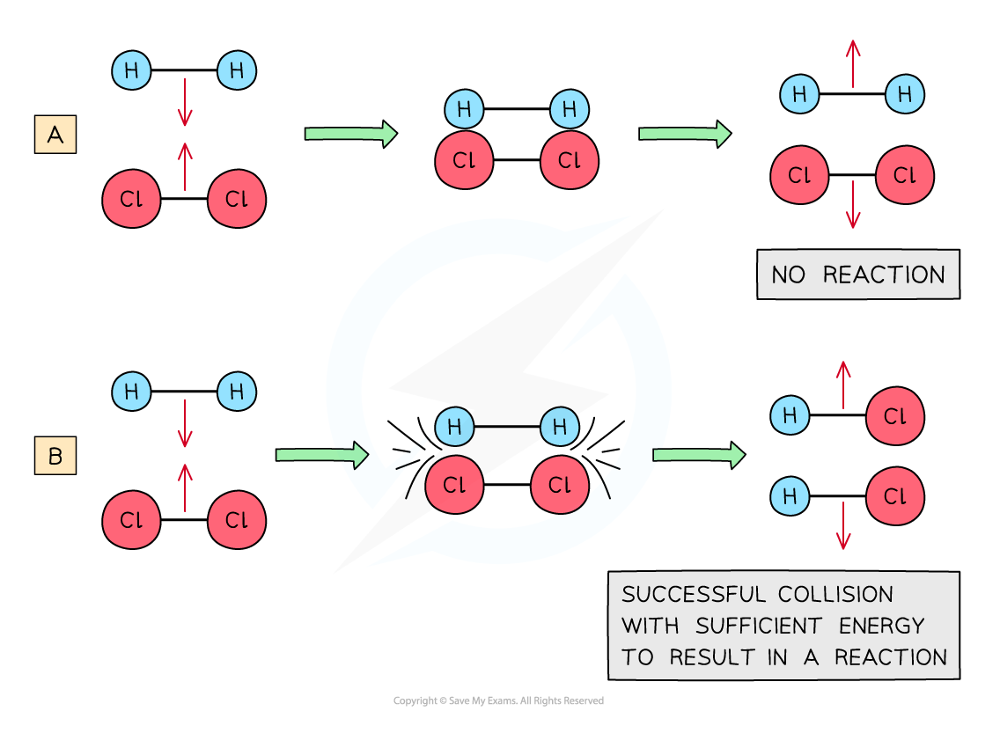
Collision frequency
Collision frequency 是 collisions per unit time。它可以通过以下方式增加：
- increase concentration：more particles in the same volume；
- increase pressure of gases：same particles in smaller volume；
- increase temperature：particles move faster and collide more often；
- increase surface area of a solid：more particles exposed for collision。
提高 collision frequency 通常提高 rate，但 temperature 还有 another important effect：it increases the proportion of particles with energy ≥ Eₐ。
Activation energy and energy profiles
Activation energy 是 reactants reaching the transition state 所需的 minimum energy。Energy profile 中：
- exothermic reaction：products lower in energy than reactants；
- endothermic reaction：products higher in energy than reactants；
Eₐis measured from reactants to the peak；- catalyst changes
Eₐ，but does not changeΔH。
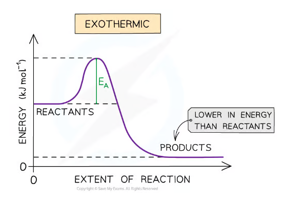
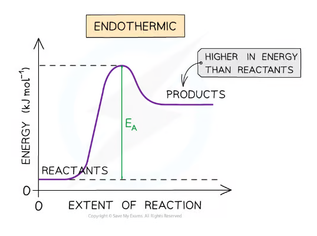
2.6.2 Rates of reaction
Definition and units
Rate 是 reactant amount decrease 或 product amount increase per unit time：
\[ \text{rate}=\frac{\text{change in amount or concentration}}{\text{time}} \]
常用 units：mol dm⁻³ s⁻¹、g s⁻¹、cm³ s⁻¹。若 graph 的 gradient 为正但表示 reactant consumption，需要写 rate as a positive magnitude，或明确使用 negative gradient。
对于 concentration-time graph：
\[ \text{rate}=\frac{\Delta[\text{product}]}{\Delta t} \qquad\text{or}\qquad \text{rate}=-\frac{\Delta[\text{reactant}]}{\Delta t} \]
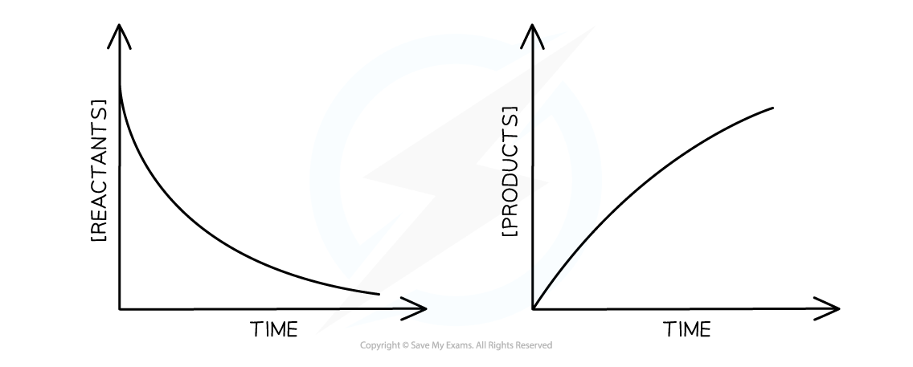
Rate from a tangent
For a curved graph，instantaneous rate at a particular time is the gradient of the tangent at that point：
\[ \text{rate}=\frac{\Delta y}{\Delta x} \]
画 tangent 时应让 triangle 足够大，并尽量 intersect gridlines，减少 reading uncertainty。
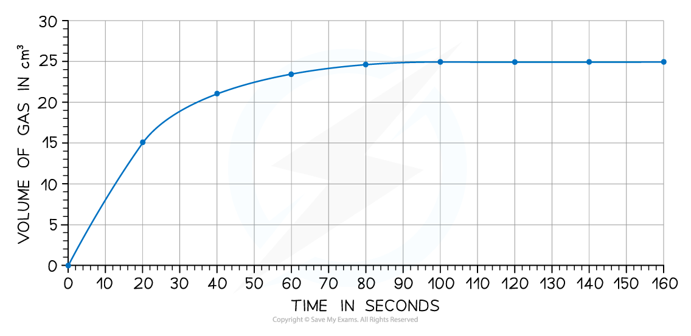
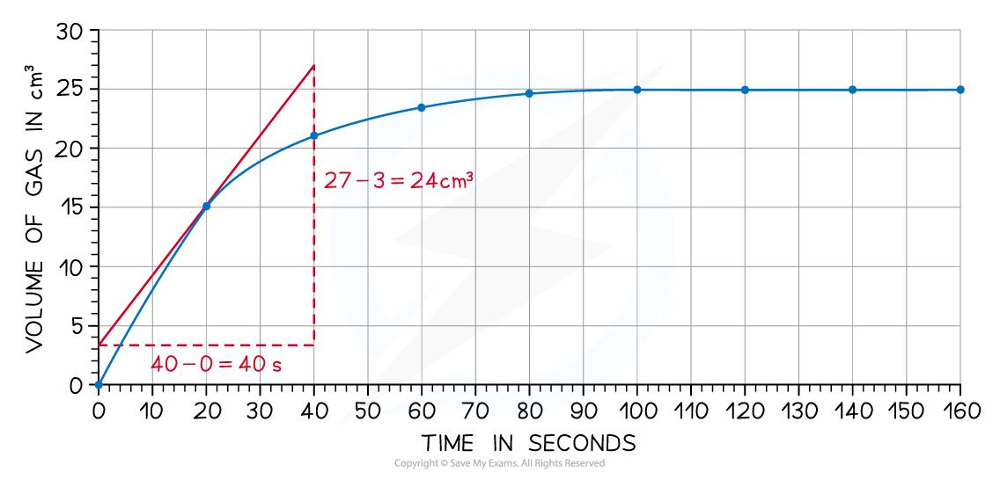
若在 20 s tangent 中 ΔV=24 cm³，Δt=40 s：
\[ \text{rate}=\frac{24}{40}=0.60\ \mathrm{cm^3\ s^{-1}} \]
Measuring rate experimentally
选择 method 取决于 reaction 是否产生 visible / measurable change：
| Method | Measured property | Suitable example |
|---|---|---|
| mass loss | mass decreases as gas escapes | CaCO₃ + HCl produces CO₂ |
| gas volume | volume collected per unit time | Mg + HCl produces H₂ |
| concentration change | samples analysed over time | titration / colorimetry；reaction may need quenching |
| disappearing cross | time for precipitate to obscure cross | sodium thiosulfate + hydrochloric acid |
Mass loss
Gas must escape，and its mass must be large enough for the balance to resolve。CO₂ is easier to measure than H₂ because CO₂ has much higher molar mass。
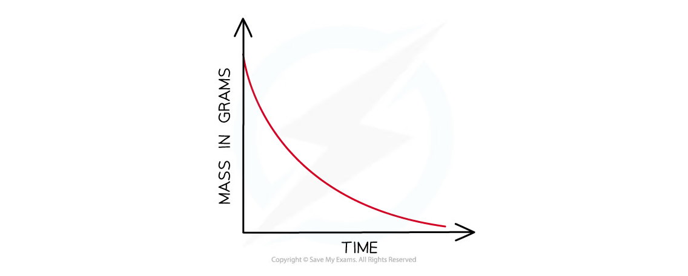
Gas volume
Use a gas syringe or collect gas over water if the gas is not significantly water soluble。
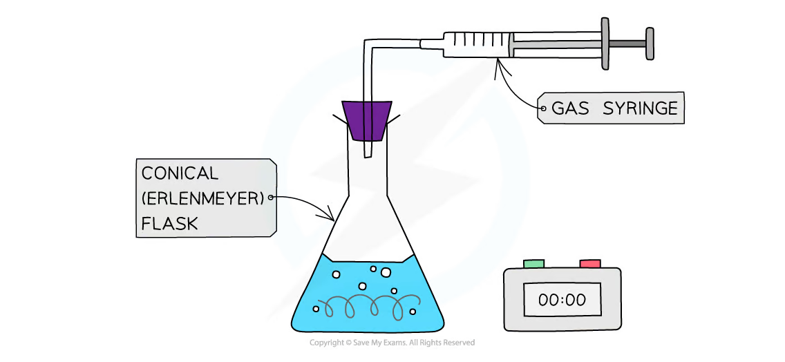
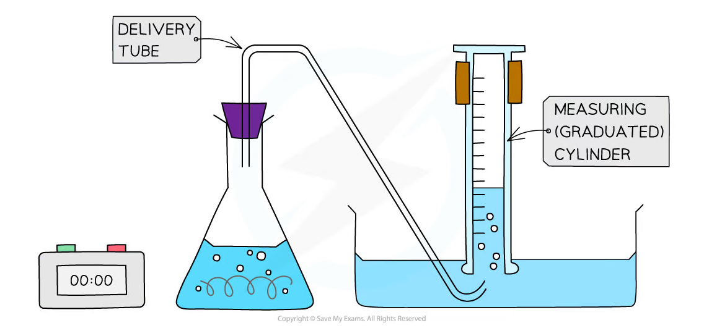
Disappearing cross
Sodium thiosulfate reacts with hydrochloric acid to form sulfur precipitate：
\[ \ce{S2O3^{2-} + 2H+ -> SO2 + S + H2O} \]
The cross becomes invisible as sulfur forms。The measured 1/time can be used as a relative rate，but this method usually generates only one data point per run and has a subjective endpoint。
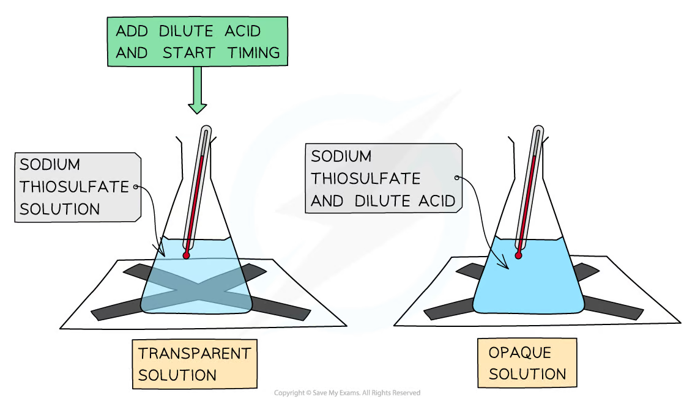
Concentration and rate
Increasing reactant concentration increases collision frequency and usually increases initial rate。The final volume of gas may remain the same if the limiting reactant amount is unchanged；it is the gradient, not necessarily the final value, that changes。
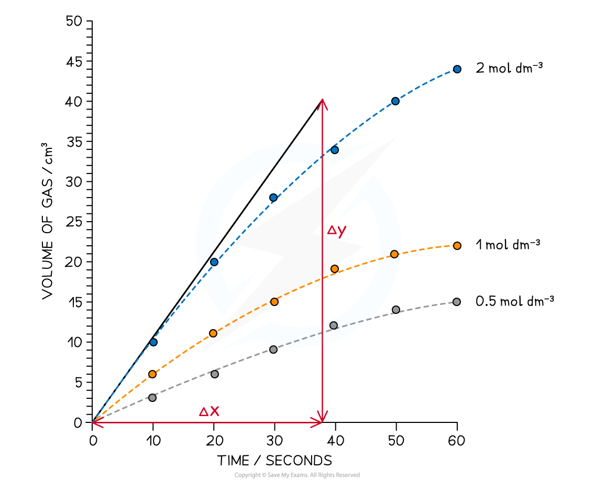
2.6.3 Maxwell-Boltzmann distributions
Energy distribution
A Maxwell-Boltzmann distribution shows the distribution of molecular energies in a sample at a particular temperature。Most particles have intermediate energy；few have very low or very high energy。
The area under the curve represents total number of particles。Area to the right of Eₐ represents particles able to make effective collisions。
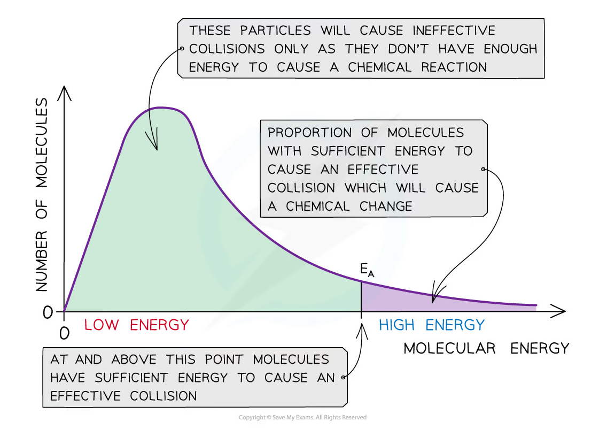
Effect of temperature
Increasing temperature causes：
- particles to have greater mean kinetic energy；
- more frequent collisions；
- a broader distribution；
- lower peak height；
- peak shifted to higher energy；
- much larger proportion with energy
≥ Eₐ。
The increase in the proportion above Eₐ has a greater effect on rate than the increase in collision frequency alone。
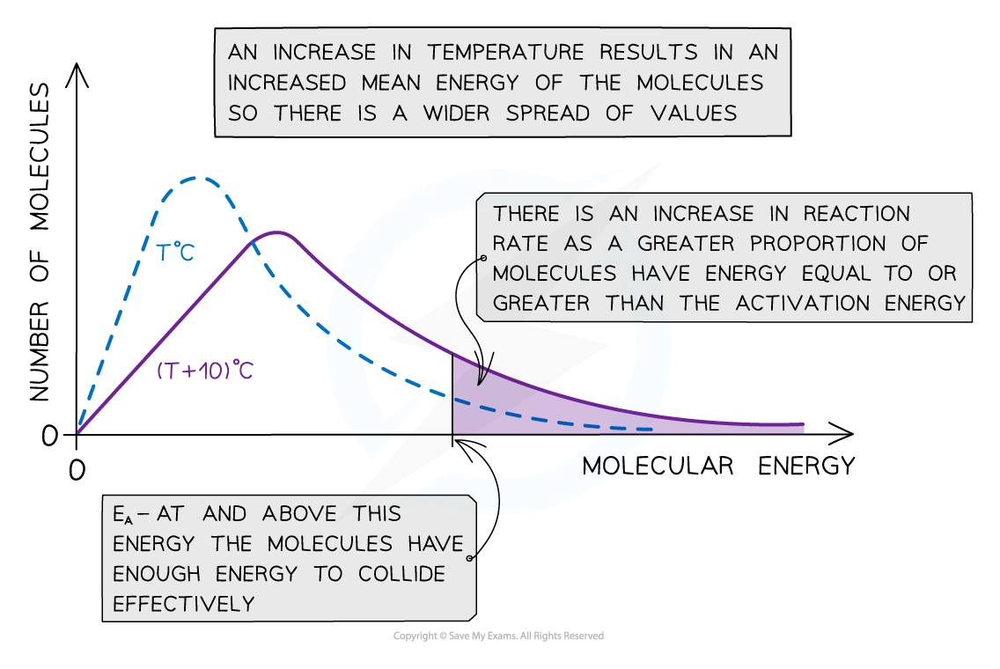
2.6.4 Catalysts and energy
Alternative pathway
A catalyst increases rate by providing an alternative reaction pathway with lower activation energy。It is chemically unchanged overall and does not alter equilibrium position or equilibrium constant。
Types：
- homogeneous catalyst：same phase as reactants；
- heterogeneous catalyst：different phase from reactants，common in industry。
Advantages include faster production、lower operating temperature / energy costs and sometimes improved atom economy。
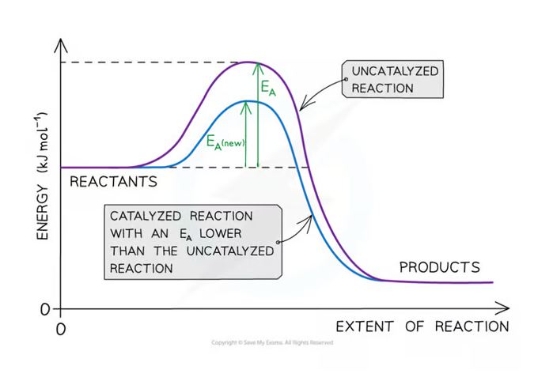
Catalyst and Maxwell-Boltzmann distribution
At the same temperature，a catalyst does not change molecular energy distribution。It moves the Eₐ line to a lower value，so a larger area under the curve represents successful collisions。
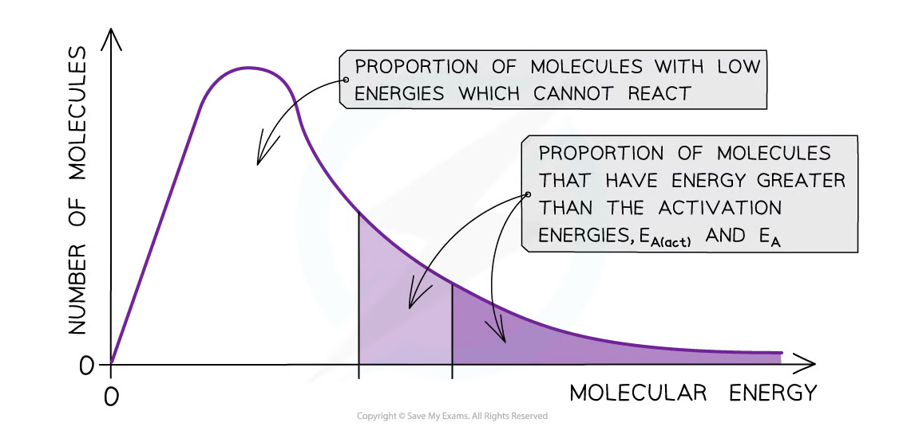
2.6.5 Dynamic equilibrium in reversible reactions
Reversible reactions
In a reversible reaction，products can react to reform reactants。Use two opposing half arrows：
\[ \ce{CuSO4.5H2O(s) <=> CuSO4(s) + 5H2O(l)} \]
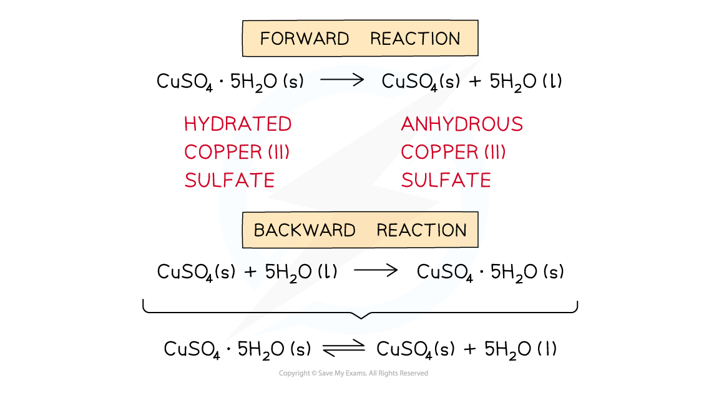
Dynamic equilibrium
Dynamic equilibrium is reached when：
- forward and backward reactions continue；
- rates of forward and backward reactions are equal；
- concentrations remain constant；
- system is closed so reactants / products cannot escape。
“Constant concentration” does not mean reactant and product concentrations are equal。There may be much more of one species than another。
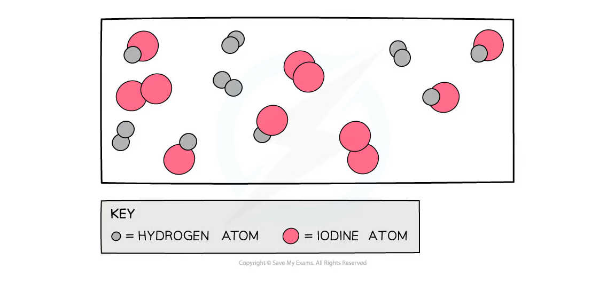
Equilibrium can be approached from either reactants or products；the final equilibrium composition is the same if temperature and other conditions are the same。
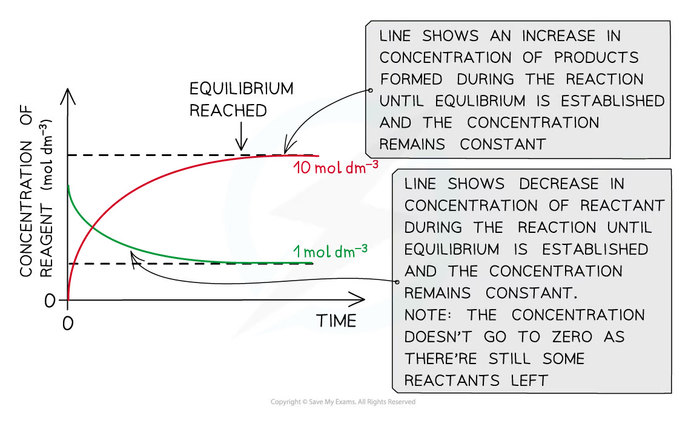
Closed and open systems
In a closed system，matter cannot escape：
\[ \ce{CaCO3(s) <=> CaO(s) + CO2(g)} \]
In an open system，CO₂ escapes，so the reverse reaction cannot restore the carbonate and decomposition may continue to completion。
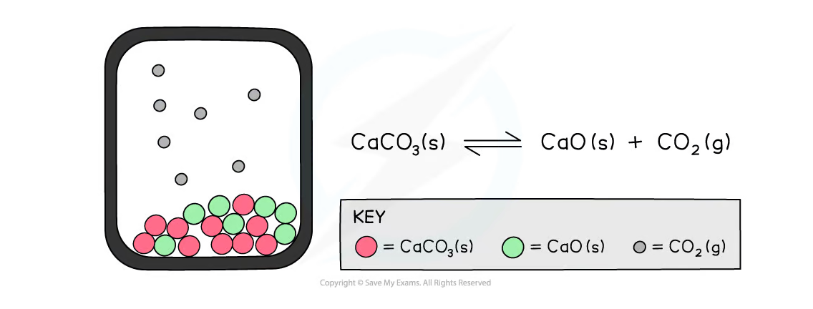
2.6.6 Le Chatelier’s principle
Position of equilibrium
Equilibrium position describes the relative amounts of reactants and products。A shift right means more products are formed；a shift left means more reactants are formed。
Le Chatelier’s principle：when a change is made to a system at dynamic equilibrium，the position shifts to oppose the change。
Concentration
- increase a reactant → equilibrium shifts right to use it；
- remove a reactant → equilibrium shifts left to replace it；
- increase a product → equilibrium shifts left；
- remove a product → equilibrium shifts right。
Adding water to an equilibrium containing only aqueous ions usually dilutes all species equally，so there may be no change in the ratio and no observable equilibrium shift。
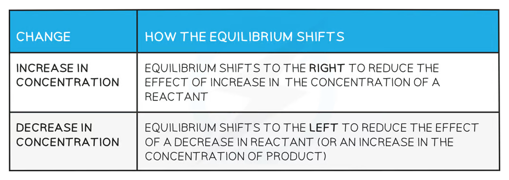
Pressure
Pressure changes only affect equilibria involving gases。For a pressure increase，equilibrium shifts to the side with fewer moles of gas；for a pressure decrease，it shifts to the side with more moles of gas。
Examples：
\[ \ce{N2O4(g) <=> 2NO2(g)} \]
Increasing pressure shifts left because there is one mole of gas on the left and two on the right。
\[ \ce{CaCO3(s) <=> CaO(s) + CO2(g)} \]
Increasing pressure shifts left because the left has no gaseous particles。
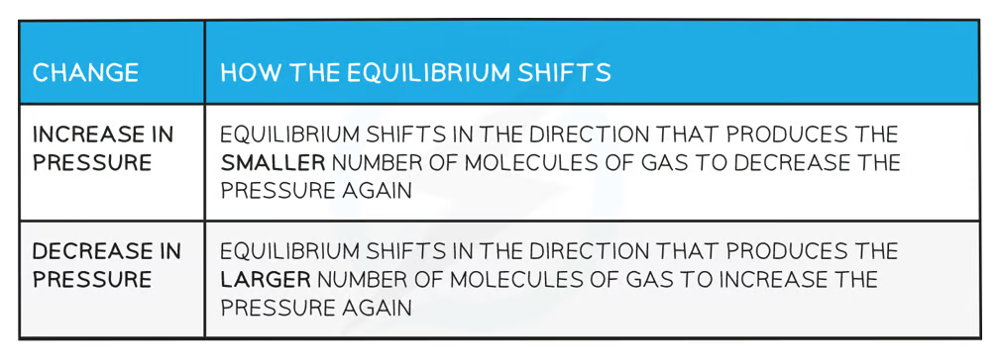
Temperature
Treat heat as a reactant in the endothermic direction and a product in the exothermic direction：
- increase temperature → shift in endothermic direction；
- decrease temperature → shift in exothermic direction。
For：
\[ \ce{H2(g) + CO2(g) <=> H2O(g) + CO(g)}\qquad \Delta H=+41.2\ \mathrm{kJ\ mol^{-1}} \]
Increasing temperature shifts right because the forward direction is endothermic。
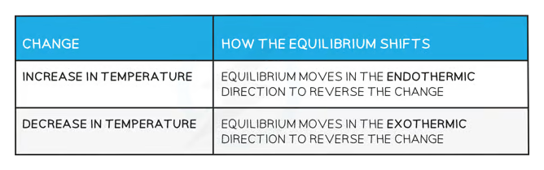
A catalyst speeds up both forward and backward reactions equally；it does not change equilibrium position or equilibrium yield。
2.6.7 Industrial compromises
Haber process
The Haber process is：
\[ \ce{N2(g) + 3H2(g) <=> 2NH3(g)}\qquad \Delta H<0 \]
The forward reaction is exothermic and has fewer gas moles on the product side。
- higher pressure increases ammonia yield but requires expensive, energy-intensive equipment；
- lower temperature gives higher equilibrium yield but rate becomes too slow；
- higher temperature increases rate but lowers equilibrium yield；
- catalyst increases rate without changing equilibrium yield。
Industry uses a compromise around 450 °C and 20 MPa (200 atm) with an iron catalyst：acceptable yield and rate while controlling energy、financial and safety costs。
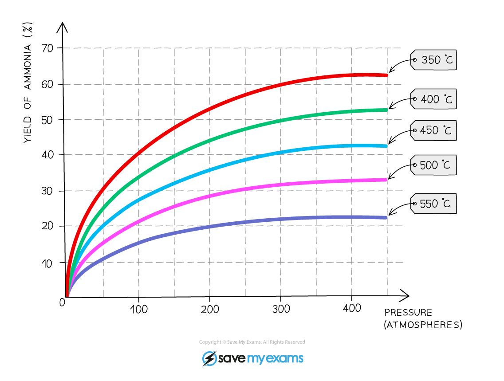
How to evaluate an industrial compromise
Discuss both chemical and practical factors：
- equilibrium yield；
- reaction rate and production per unit time；
- energy cost；
- equipment and pressure cost；
- environmental impact；
- health and safety；
- profit and market demand。
Exam checklist
Source note
本页内容来自项目内的 Note per Chapter/Note per Chapter/2.6 Introduction to Kinetics - Equilibria.pdf.pdf。PDF 中的 collision diagrams、rate graphs、apparatus、Maxwell-Boltzmann distributions、equilibrium diagrams 和 Haber graph 已独立提取并统一处理为 white-background PNG，存放在 assets/notes/2-6-kinetics-equilibria/。